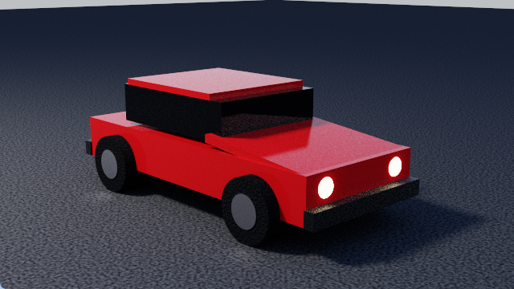

Cafesa3D is Kosmos's 3D modeller. You place objects in a scene, give them colours and textures, light them, and render a picture of them by ray tracing - the way light really travels. It works like Blender, so what you learn here carries over.
This tutorial is for somebody who has never used a 3D program. Read it in order the first time: each chapter uses what the one before taught. By the end you will have built a car and rendered it.

The car you will build in chapters 6 and 7, as F12 renders it.
Open it again at any time with F1 in Cafesa3D, or from the three dots at the right end of its header, then Tutorial.
A scene is everything in your 3D world: the objects, the lamps, the sky and the camera.
An object is one thing in it - a cube, a wheel, a lamp. Every object has a place, a turn and a size, a shape, and (unless it is a lamp or the camera) a material.
Rendering is making a picture of the scene. Cafesa3D follows rays of light around it, bouncing off every surface, so shadows, reflections and glass come out as they would in a photograph.